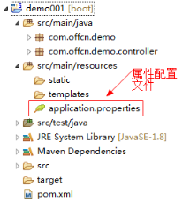
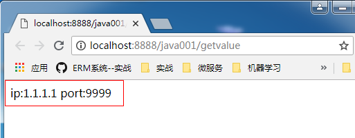
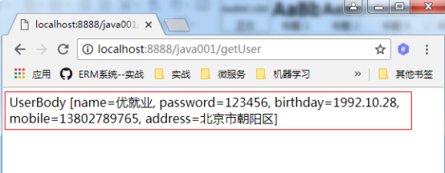
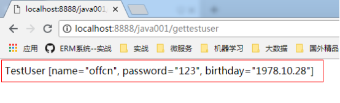

Spring Boot在实际开发中，并不真正是所谓的『零配置』，他的理念是“习惯优于配置”采用了一些默认的习惯性配置，让你无需手动进行配置，从而让你的项目快速运行起来。所以要想玩转Spring Boot，了解这些默认配置还是必不可少的。
创建Spring Boot项目时，会默认生成一个全局配置文件application.properties(可以修改后缀为.yml)，在src/main/resources目录下或者类路径的/config下。我们可以通过修改该配置文件来对一些默认配置的配置值进行修改。

【修改默认配置】
1、spring boot 开发web应用的时候，默认tomcat的启动端口为8080，如果需要修改默认的端口，则需要在application.yml添加以下记录：
|
server: port: 8888 |
重启项目，启动日志可以看到：Tomcat started on port(s): 8888 (http) 启动端口为8888，浏览器中访问 http://localhost:8888 能正常访问。
2、spring boot 开发web应用的时候，访问路径为/，如果需要修改访问路径，则需要在application.yml添加以下记录：
|
server: port: 8888 servlet: context-path: /java001 |
重启项目，启动日志就可以看到：Tomcat started on port(s): 8888 (http) with context path '/java001'，浏览器中访问 http://localhost:8888/java001 能正常访问。
我们可以在application.yml文件中，配置一些常量或者其他参数配置。读取的时候通过Spring的@Value(“${属性名}”)注解即可。
（1）、在application.yml定义几个常量：
|
offcn_ip: 1.1.1.1 offcn_port: 9999 |
（2）、编写Controller类读取自定义属性
|
package com.offcn.demo.controller; import org.springframework.beans.factory.annotation.Value; import org.springframework.web.bind.annotation.GetMapping; import org.springframework.web.bind.annotation.RestController; @RestController public class HelloConfigController { //获取配置的offcn_ip并注入 @Value("${offcn_ip}") private String offcn_ip;
@Value("${offcn_port}") private String offcn_port;
@GetMapping("/getvalue") public String getValue() { return "ip:"+offcn_ip+" port:"+offcn_port; } }
|
访问http://localhost:8888/java001/getvalue
显示结果如下：

当属性参数变多的时候，我们习惯创建一个实体，用实体来统一接收赋值这些属性。
（1）、定义配置文件
|
userbody: name: 优就业 password: 123456 birthday: 1992.10.28 mobile: 13802789765 address: 北京市朝阳区 |
（2）、创建实体类
需要在实体类上增加注解@ConfigurationProperties，并指定prrfix前缀。
|
package com.offcn.demo.bean; import org.springframework.boot.context.properties.ConfigurationProperties;
@ConfigurationProperties(prefix="userbody") public class UserBody { private String name; private String password; private String birthday; private String mobile; private String address; //此处省略set和get方法 @Override public String toString() { return "UserBody [name=" + name + ", password=" + password + ", birthday=" + birthday + ", mobile=" + mobile + ", address=" + address + "]"; } }
|
（3）、编写Controller调用属性bean
EnableConfigurationProperties注解需要加在调用类上，或者加在启动类SpringbootSimpleApplication上也可以。
|
package com.offcn.demo.controller;
import org.springframework.beans.factory.annotation.Autowired; import org.springframework.boot.context.properties.EnableConfigurationProperties; import org.springframework.web.bind.annotation.GetMapping; import org.springframework.web.bind.annotation.RestController;
import com.offcn.demo.bean.UserBody;
@RestController @EnableConfigurationProperties({UserBody.class}) public class HelloControllerBean { @Autowired UserBody userbody;
@GetMapping("/getUser") public String getUser(){ return userbody.toString(); } }
|
访问地址：http://localhost:8888/java001/getUser
可以看到返回值：

application.yml是系统默认的配置文件，当然我们也可以创建自定义配置文件，在路径src/main/resources下面创建文件test.properties
注意：spring boot 1.5版本后@PropertySource注解就不能加载自定义的yml配置文件了
（1）、定义test.properties
|
testuser.name = "offcn" testuser.password = "123" testuser.birthday = "1978.10.28" |
（2）、将配置赋值到javabean
@Configuration 注解包含@Component注解
1.5版本后需要通过@PropertySource(“classpath:test.properties”)指定配置文件
|
package com.offcn.demo.bean;
import org.springframework.boot.context.properties.ConfigurationProperties; import org.springframework.context.annotation.Configuration; import org.springframework.context.annotation.PropertySource;
@Configuration @PropertySource("classpath:test.properties") @ConfigurationProperties(prefix = "testuser") public class TestUser { private String name; private String password; private String birthday; //此处省略set，get和toString方法 }
|
（3）、Controller 读取配置
|
package com.offcn.demo.controller;
import org.springframework.beans.factory.annotation.Autowired; import org.springframework.boot.context.properties.EnableConfigurationProperties; import org.springframework.web.bind.annotation.GetMapping; import org.springframework.web.bind.annotation.RestController;
import com.offcn.demo.bean.TestUser; import com.offcn.demo.bean.UserBody;
@RestController @EnableConfigurationProperties({UserBody.class,TestUser.class}) public class HelloControllerBean { @Autowired UserBody userbody;
@Autowired TestUser testUser;
@GetMapping("/getUser") public String getUser(){ return userbody.toString(); }
@GetMapping("/gettestuser") public String gettestUser() { return testUser.toString(); } }
|
访问地址：http://localhost:8888/java001/gettestuser
可以看到返回值：

使用多个yml配置文件进行配置属性文件
可以使用多个yml来配置属性，将于环境无关的属性放置到application.yml文件里面；通过与配置文件相同的命名规范，创建application-{profile}.yml文件 存放不同环境特有的配置，例如 application-test.yml 存放测试环境特有的配置属性，application-prod.yml 存放生产环境特有的配置属性。
通过这种形式来配置多个环境的属性文件，在application.yml文件里面spring.profiles.active=xxx来指定加载不同环境的配置,如果不指定，则默认只使用application.yml属性文件，不会加载其他的profiles的配置。
（1）、创建application-dev.yml
|
server: port: 8003 servlet: context-path: /java003
|
（2）、创建application-test.yml
|
server: port: 8001 servlet: context-path: /java001
|
（3）、创建application-prod.yml
|
server: port: 8002 servlet: context-path: /java002 |
（4）、修改application.yml
|
spring: profiles: active: test |
通过设置，active: 的值对应不同的{profile}就可以使对应的配置文件生效。